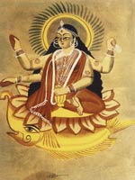

Шива ("приносить щастя"), в індуїстської міфології один з верховних богів, який разом з Вішну і Брахмой утворює божественну тріаду - тримурти. Шива не тільки добрий захисник, але і грізний бог, що живе на полях битв і у похоронних багать. Нерідко його зображували з мотузкою, на яку нанизані черепа.
Шива - бог-творець і разом з тим бог часу, а отже, і руйнування, бог родючості і в той же час аскет, який придушив бажання і мешкає високо в Гімалаях на горі Кайлас. Іноді він навіть виступав як двостатеве істота. Ці взаємовиключні якості символізували божество, що увібрало в себе всі суперечності світу, якому відведена роль того, що знищує світу і богів в кінці кожної кальпи, періоду, що дорівнює 8 640 000 000 людських років.
Вважалося, що в якості Натараджи, "царя танцю", Шива регулює світовий порядок. Статут танцювати, він зупиняється, і у всесвіті запанував хаос. Так слідом за періодом творення приходить руйнування. Одного разу Шива з'явився 10 000 мудрецям-ріші, щоб вони поклонилися йому. У відповідь риши прокляли бога і наслали на нього лютого тигра. Шива нігтем здер з звіра шкуру і зробив собі накидку. Ріші наслали змію, але Шива надів її на шию як намисто. Ріші створили злого карлика і озброїли його кийком, але Шива, вставши на спину карлика, почав танцювати. І риши кинулися до його ніг. Творча сила бога втілена в його основному символі - Лінг-фалосі, чоловічому дітородному органі.
Один з міфів розповідає, як бог прийшов в ліс, де медитували мудреці. Ті не впізнали Шиву і, запідозривши його в тому, що він хоче спокусити їх дружин, позбавили його фалоса. Негайно світ огорнула темрява, і мудреці втратили свою чоловічу силу. Усвідомивши свою помилку, вони принесли дари Шиві, і у всесвіті знову запанував порядок. Шиву часто зображують чотирирукої і триоким. Третє око, око внутрішнього бачення, розташований в центрі чола. На шиї у нього намисто з змії, ще одна змія оперізує тіло, а інші обвивають руки. Зустрічаються зображення Шиви з синьою шиєю; його називали Нілакантха, або "синя шия"; про це йдеться в міфі про пахтанье світового океану.
Згідно широко відомому міфу, боги використовували змія Васуки (Шешу) при створенні амтріти і обертали з його допомогою гору Мандару. Однак змій настільки втомився, що випустив отрута, який погрожував знищити весь світ. Шива проковтнув отруту, і його шия забарвилася в синій колір. Шива - батько слоноподібного бога Ганеші і войовничого бога скандію. Їздова тварина Шиви і його слуга - бик Нандін. За переказами, третє око Шиви виник в результаті витівки його дружини Парваті. Шива медитував на горі Кайласа, а Парваті підкралася ззаду і закрила його очі руками. Негайно сонце погасло, і все живе затремтіло від страху. Раптом у чолі Шиви з'явився очей, що виділяє полум'я, і ??розігнав темряву. Вогонь, що вирвався з ока, висвітлив усі Гімалаї і спалив бога любові Каму, коли той намагався відвернути Шиву від аскетичних подвигів.